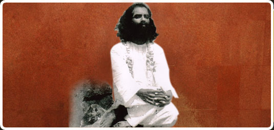
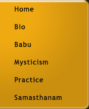

<!DOCTYPE html PUBLIC "-//W3C//DTD XHTML 1.0 Transitional//EN" "http://www.w3.org/TR/xhtml1/DTD/xhtml1-transitional.dtd">
<html xmlns="http://www.w3.org/1999/xhtml">
<head>
<meta http-equiv="Content-Type" content="text/html; charset=us-ascii" />
<title>:: -- Welcome to Sadguru Chittibabaji --- ::</title>
<style type="text/css"><!--
body {
	margin-left: 0px;
	margin-top: 0px;
	margin-right: 0px;
	margin-bottom: 0px;
	background-image: url();
	background-color: #000000;
}
--></style>
<link href="images/css/fontstyles.css" rel="stylesheet" type="text/css" />
<style type="text/css"><!--
.style1 {color: #EFA911}
--></style>
</head>
<body>
<table align="center" background="images/bg_tem.gif" border="0" cellpadding="0" cellspacing="0" width="779">
<tbody>
<tr>
<td valign="top" width="30">&nbsp;</td>
<td valign="top">
<table border="0" cellpadding="0" cellspacing="0" width="100%">
<tbody>
<tr>
<td valign="top">
<table border="0" cellpadding="0" cellspacing="0" width="100%">
<tbody>
<tr>
<td valign="top" width="15%"></td>
<td valign="top" width="85%"></td></tr></tbody></table></td></tr>
<tr>
<td valign="top">
<table border="0" cellpadding="0" cellspacing="0" width="100%">
<tbody>
<tr>
<td valign="top" width="74%"></td>
<td valign="center" width="26%">
<map name="Map" id="Map">
<area alt="" shape="rect" coords="26,11,80,29" href="index_new.html" />
<area alt="" shape="rect" coords="27,48,65,64" href="bio.html" />
<area alt="" shape="rect" coords="28,83,73,101" href="baba.html" />
<area alt="" shape="rect" coords="27,118,109,137" href="mysticism.html" />
<area alt="" shape="rect" coords="26,156,93,172" href="practice.html" />
<area alt="" shape="rect" coords="28,190,144,207" href="samasthanam.html" /></map></td></tr></tbody></table></td></tr>
<tr>
<td class="redsub" height="51" valign="center">Mysticism</td></tr>
<tr>
<td valign="top">
<table border="0" cellpadding="0" cellspacing="0" width="100%">
<tbody>
<tr>
<td height="669" valign="top" width="515">
<p class="login" align="justify">There aren&#8217;t any two ways of knowing mysticism. But to comprehend it in a  rational manner and in order to find its origin we need to divide mysticism  into having at least two distinctive features. One that directly teaches us a  way of looking at the world which is mystical in itself and the other which  strives to look at mysticism objectively as a concept that has had an  evolutionary process. However, the extent to which we can rationalise the  mystical process can only be limited to the singular purpose of establishing a  certain coherence, since mysticism is essentially unlearning all rationale.<br />
<br />
              Mysticism can be defined as a world-view that situates man as a small strand  in an immense web of magic. The web can also be signified as Nature, in its  original, pristine form. Each person again is viewed as a unique component  converging to a collective, which in turn is a minuscule part of nature. <br />
<br />
              Mysticism (from the Greek <em>mystikos</em>, an initiate of the Eleusinian  Mysteries; <em>mysteria</em> meaning &quot;initiation&quot;) is the pursuit of  achieving communion, identity with, or conscious awareness of ultimate reality,  the divinity, spiritual truth, or God through direct experience, intuition, or  insight. Traditions may include a belief in the literal existence of  dimensional realities beyond empirical perception, or a belief that a true  human perception of the world goes beyond current logical reasoning or  intellectual comprehension. A person delving in these areas may be called a  Mystic. In many cases, the purpose of mysticism and mystical disciplines is to  reach a state of return or re-integration with Nature, that is perceived  through a anthropomorphic god or ritual. A common theme in mysticism is that  the mystic and all of reality are One. The purpose of mystical practices is to  achieve that oneness in experience, to achieve a larger identity and  re-identify with the all that is. The state of oneness has many names depending  on the mystical system. <br />
<br />
              The term &quot;mysticism&quot; is often used to refer to beliefs which go  beyond the purely exoteric practices of mainstream religions, while still being  related to or based in a mainstream religious doctrine. For example, Kabbalah  is a significant mystical movement within Judaism, and Sufism is a significant mystical  movement within Islam. Gnosticism refers to various mystical sects of classical  / late antiquity that were influenced by Platonism, Judaism and Christianity.  Some have argued that early Christianity itself was a mystical sect that arose  out of Judaism. Non-traditional knowledge and ritual are considered as  Esotericism, for example Buddhism's Vajrayana. Vedanta, the Naths (North  India), the Datta (South India), Siddha, Nagas are considered the several  mystical branches of Indic religions, being a system of ancient religions and a  rather broad 'all-paths' embracing philosophy, has many mystical branches,  Saiva, Bhagavata, Sakteya and Saurya religions.<br />
<br />
              Mystical doctrines may reference religious texts that are non-canonical, as  well as more mainstream canon, and generally require a more committed  intellectual, psychological and physical approach from spiritual devotees. Most  mystical teachers typically have some history or connection with a mainstream  religious branch - controversial or otherwise, but gather followers through  reinterpreting sacred texts or developing new spiritual approaches from their  own unique experience<br />
<embed src="images/namam2.mp3" autostart="True" hidden="True"></embed> </p>              </td>
<td valign="top" width="20">&nbsp;</td>
<td valign="top" width="181">
<table border="0" cellpadding="0" cellspacing="0" width="181">
<tbody>
<tr>
<td valign="top"></td>
<td valign="top" width="160"></td>
<td valign="top"></td></tr>
<tr>
<td bgcolor="#9b7335" valign="top"></td>
<td bgcolor="#9b7335" valign="top">
<table border="0" cellpadding="0" cellspacing="0" width="160">
<tbody>
<tr>
<td>
<h2 class="supp">Support Us </h2></td></tr>
<tr>
<td height="159" valign="top">
<p class="bodycopy" align="justify">The only source of income for worship, maintenance, Annadana and  construction work is, donations from devotees,their friends and their  acquaintances.&nbsp; After several deliberations the management has decided  to request and appeal to all for donations and framed a set of <a href="support_us.html">guidelines</a>.  </p>
<p class="bodycopy" align="justify">Dear  viewer your contribution to the cause of the Ashram will go a  long way in helping the Ashram, in enhancing your prosperity and providing  internal peace and tranquility and would also bring you and your loved ones,  blessing of Babaji.</p>
<p class="bodycopy" align="justify"><a href="support_us.html">To  Donate Online using your Credit Card, click here..</a></p></td></tr></tbody></table></td>
<td bgcolor="#9b7335" valign="top"></td></tr>
<tr>
<td valign="top"></td>
<td valign="top" width="160"></td>
<td valign="top"></td></tr></tbody></table><br />
<table border="0" cellpadding="0" cellspacing="0" width="100%">
<tbody>
<tr>
<td>
<table border="0" cellpadding="0" cellspacing="0" width="100%">
<tbody>
<tr>
<td></td>
<td bgcolor="#9b7335"></td>
<td></td></tr>
<tr>
<td bgcolor="#9b7335">&nbsp;</td>
<td class="bodycopy style1" bgcolor="#9b7335" height="55" valign="top">
<p>Experience &amp; Evolve<br />
<span class="bodycopy">Can one find solace in a materialistic world and yet lead a spiritual path?The answer is YES!</span><br />
<a href="images/INVOLVE%20&amp;%20EVOLVE-5-04-09.pdf">More&gt;&gt;</a><br />
<br /></p></td>
<td bgcolor="#9b7335">&nbsp;</td></tr>
<tr>
<td></td>
<td bgcolor="#9b7335"></td>
<td></td></tr></tbody></table></td></tr></tbody></table></td></tr></tbody></table></td></tr>
<tr>
<td valign="top">&nbsp;</td></tr>
<tr>
<td class="login" align="center" valign="top"><a href="index_new.html">Home</a> | <a href="bio.html">Bio</a> | <a href="baba.html">Babu</a> | <a href="mysticism.html">Mysticim</a> | <a href="practice.html">Practice</a> | <a href="samasthanam.html">Samasthanam</a><a href="temple.html"><br />
          The Temple</a> | <a href="the_sthupas.html">The Sthupas</a> | <a href="annadana.html">Annadana</a> | <a href="gosala.html">Gosala</a> | <a href="support_us.html">Support Us</a> | <a href="contact_us.html">Contact Us</a> </td></tr>
<tr>
<td valign="top">&nbsp;</td></tr>
<tr>
<td class="help-text" valign="top">
<div align="center">Copyright &#169; 2009 Sadguru Chittibabji. All Rights Reserved. </div></td></tr></tbody></table></td>
<td valign="top" width="30">&nbsp;</td></tr></tbody></table>
</body>
</html>